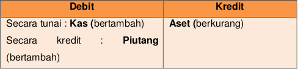
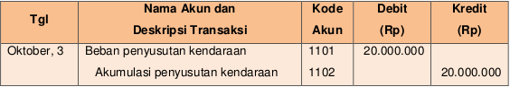
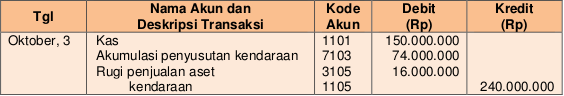
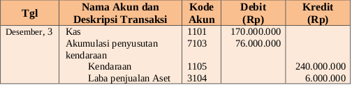
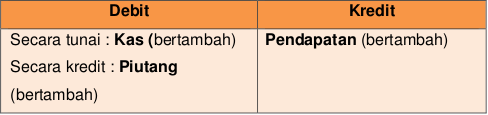
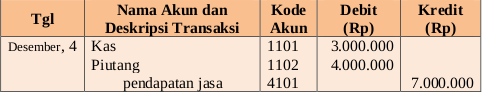

Transaksi penjualan dapat berupa penjualan Aset perusahaan ,misalnya penjualan mesin, peralatan, gedung, dan lain-lain
Ingat !!!
Isilah nominal/harga aset sesuai dengan perolehan saat membeli atau mendapatkan aset tetap tersebut, dan isikan nominal kas/ piutang yang anda dapatkan saat menjual aset tersebut.
Pada tanggal 3 Oktober 2017, Perusahaan menjual aset tetap berupa kendaraan kantor dengan harga Rp 150.000.000 secara tunai. Kendaraan ini dibeli pada 02 Oktober 2014 dan saat itu harga pembeliannya menghabiskan dana sebesar Rp 240.000.000. Penyusutan aset dihitung dengan menggunakan metode garis lurus taksiran umur manfaat 10 tahun.
Penyelesaian:
Perhatikan contoh transaksi berikut ini:
Pada tanggal 1 Oktober 2017, pemilik perusahaan menambahkan modal perusahaan berupa kendaraan senilai Rp25.000.000,00.
Lalu jurnal untuk mencatat beban penyusutan tersebut adalah sebagai berikut
Saat kendaraan dijual dengan harga Rp150.000.000,00 dibawah nilai buku maka jurnal akan nampak sebagai berikut:
*Misalkan kendaraan dijual dengan harga Rp170.000.000,00 (lebih tinggi dari nilai buku) maka, jurnal saat penjualan kendaraan adalah:
Saat terjadi transaksi pendapatan jasa
Tanggal 4 Oktober 2017 perusahaan memperoleh pendapatan senilai Rp7.000.000,00. sebesar Rp.3000.000 diterima secara tunai, sisanya akan diterima kemudian
